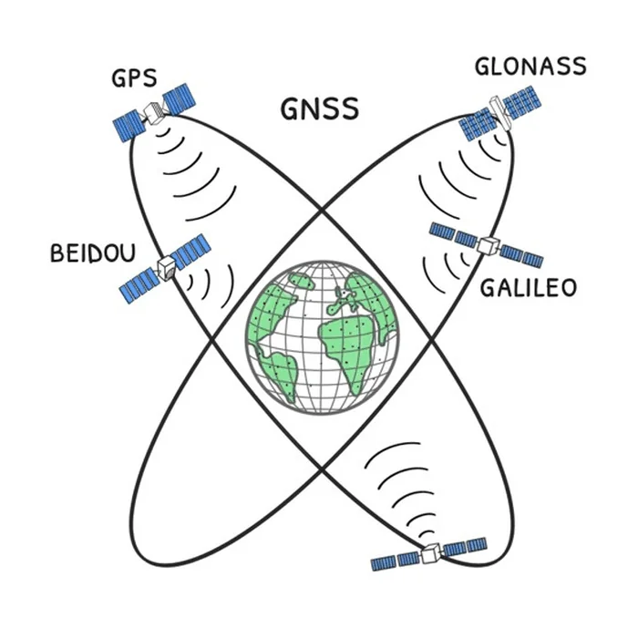

Why GNSS is not enough
Nearly everything that finds a position or gives directions today runs on GPS, Galileo, GLONASS and BeiDou. The dependency does not stop at vehicle navigation: emergency crews, public fleets, unmanned vehicles and freight all hang on the same four systems.

Where it breaks
- The signal is lost in tunnels, indoors and between tall buildings.
- The signal is weak, so it is easy to drown out, and the equipment for doing it keeps spreading.
- A fake signal makes the receiver work out a wrong position. The receiver then shows that position as though it were right, and with high confidence. That is what makes it dangerous.
- Critical services depend on a single family of technology.
- In a crisis the authority over the system does not sit in Turkey.
What has already happened
- United States, 14 May 2026. An air ambulance based in Roswell, on its way to Sierra Blanca Regional Airport in Ruidoso to pick up a patient, hit the Capitan Mountains; four people died. Previously announced military GPS jamming was active in the area throughout the flight, and the crew reported losing GPS 8 minutes after take-off. The NTSB preliminary report has not yet determined the cause; the accident still shows that an emergency flight can lose its only source of position while jamming is on. NTSB preliminary report
- The Baltic, April 2024. Finnair had to stop flying to Tartu altogether for a month. Two airliners lost the signal on approach and turned back to Helsinki without landing; the flights stayed suspended for weeks because the airport's only approach system was GPS based. Anadolu Agency
- Norway, since autumn 2017. GPS signals in Finnmark have been cut again and again; Norway's defence ministry confirmed the source as Russia's Kola Peninsula. Police, ambulance and rescue teams there navigate by GPS. The regional police chief told of a person lost in a snowstorm who was saved because his GPS emergency beacon worked and could not have been found in the deep snow without GPS, to stress that jamming puts such rescues at risk. The Barents Observer
- The Black Sea, 22 June 2017. Receivers on more than twenty commercial ships reported a wrong position at the same time: at sea, their screens put them at Gelendzhik Airport, more than 32 km inland. Russia is suspected to be behind it. GalileoGNSS
- When it happened
What YERKON answers
For the rural unit, 8 to 10 km is a communications and coverage target; how accurately it can measure distance at that range is to be confirmed by field trials. If it holds, a low flying aircraft can hear the unit too. Units around an airport could offer a terrestrial positioning service that keeps working even with the satellites silenced. These are the report's targets, and this repository measured none of them in the field.
Against a fake signal YERKON is more than a standby: it is a cross-check. A vehicle can compare the satellite's position with the one from the ground and so detect that it is under a spoofing attack.